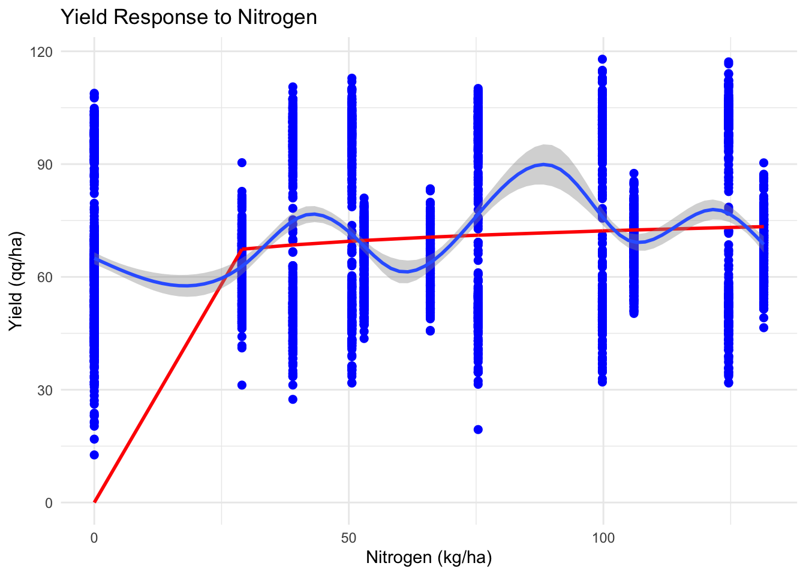

library(pacman)
p_load(agridat, agricolae)
p_load(dplyr, tidyr)
p_load(ggplot2)
p_load(nlme, lme4, car, multcomp)Statistical Models with R: I - Essentials
statistical modelling
R
agriculture
agridat
agricolae
1 Introduction
Statistical modeling is a process of developing and analyzing mathematical models to represent real-world phenomena. In agricultural research, statistical modeling plays a crucial role in understanding the relationships between environmental variables, management practices, and crop responses. By leveraging statistical models, researchers can make informed decisions about optimizing yield, improving resource efficiency, and enhancing sustainability in agriculture.
In this lesson, we focus on the essentials of statistical modeling using R, with examples relevant to ag-data science. We will explore the use of statistical models to analyze field experiments, evaluate treatment effects, and understand interactions between genotype, environment, and management practices. The examples will utilize datasets from the agridat package, particularly the lasrosas.corn dataset, and introduce key functions from stats, nlme, lme4, car, multcomp, and agricolae.
1.1 Statistical Modeling Process
- Data Collection and Exploratory Data Analysis (EDA)
- Statistical modeling starts with data collection and EDA. In agricultural experiments, this involves gathering data on yield, soil properties, weather conditions, and management practices. EDA helps identify patterns, trends, and relationships between variables while detecting outliers or anomalies.
- Types of Statistical Models
- In agricultural research, common models include:
- Regression Models: For predicting continuous outcomes like crop yield based on variables such as soil nutrients or precipitation.
- Time Series Models: To analyze temporal data like seasonal growth patterns or yield trends over years.
- Mixed-Effects Models: Ideal for experimental designs with hierarchical structures, such as split-plot designs or repeated measures.
- In agricultural research, common models include:
- Model Selection and Assumptions
- The choice of model depends on the data type, research question, and assumptions about the data. For example:
- Linear Regression assumes a linear relationship between predictors and outcome, suitable for continuous variables like yield or biomass. We call it linear because we are basically comparing “lines”, where the lines represent the “means”.
- Generalized Linear Models (GLM) are used for non-normal distributions, such as count data (e.g., pest counts) or binary outcomes (e.g., disease presence).
- The choice of model depends on the data type, research question, and assumptions about the data. For example:
- Model Evaluation
- Evaluating model performance is crucial to ensure accurate predictions and inferences. In agricultural modeling, common metrics include:
- R-squared (R²): Measures the proportion of variation explained by the model. But it is NOT always recommended as a criterion the “select models”.
- Mean Squared Error (MSE) and Root Mean Squared Error (RMSE): Assess prediction accuracy.
- AIC and BIC: For model comparison and selection. These two are recommended when selecting a model.
- Evaluating model performance is crucial to ensure accurate predictions and inferences. In agricultural modeling, common metrics include:
- Application in Agricultural Research
- Statistical models provide insights into complex agricultural systems, enabling researchers to:
- Identify Key Drivers: Determine which factors most influence crop performance, such as genotype-environment interactions.
- Predict Future Trends: Forecast yield potential under different climate scenarios or management practices.
- Optimize Inputs: Inform decision-making for fertilizer application, irrigation scheduling, or pest management.
- Statistical models provide insights into complex agricultural systems, enabling researchers to:
2 Essential R Packages
3 Data
data_corn <- agridat::lasrosas.corn
# Check data structure and variables
glimpse(data_corn)Rows: 3,443
Columns: 9
$ year <int> 1999, 1999, 1999, 1999, 1999, 1999, 1999, 1999, 1999, 1999, 1999…
$ lat <dbl> -33.05113, -33.05115, -33.05116, -33.05117, -33.05118, -33.05120…
$ long <dbl> -63.84886, -63.84879, -63.84872, -63.84865, -63.84858, -63.84851…
$ yield <dbl> 72.14, 73.79, 77.25, 76.35, 75.55, 70.24, 76.17, 69.17, 69.77, 6…
$ nitro <dbl> 131.5, 131.5, 131.5, 131.5, 131.5, 131.5, 131.5, 131.5, 131.5, 1…
$ topo <fct> W, W, W, W, W, W, W, W, W, W, W, W, W, W, W, W, W, W, W, W, W, W…
$ bv <dbl> 162.60, 170.49, 168.39, 176.68, 171.46, 170.56, 172.94, 171.86, …
$ rep <fct> R1, R1, R1, R1, R1, R1, R1, R1, R1, R1, R1, R1, R1, R1, R1, R1, …
$ nf <fct> N5, N5, N5, N5, N5, N5, N5, N5, N5, N5, N5, N5, N5, N5, N5, N5, …4 Key Statistical Models
4.1 Linear Models (LM)
Linear regression models are fundamental for analyzing relationships between variables. The term “regression” could be confusing because it means we are working with a “continous response variable”, but it could also mean we using a “continuous covariate” (or independent / or explanatory variable) (e.g. a “regressor”).
4.1.1 Categorical covariate/s as independent variable/s
# Complete Randomized
lm_fit_01 <- lm(yield ~ nf, data = data_corn)
# See summary
summary(lm_fit_01)
Call:
lm(formula = yield ~ nf, data = data_corn)
Residuals:
Min 1Q Median 3Q Max
-52.313 -15.344 -3.126 13.563 45.337
Coefficients:
Estimate Std. Error t value Pr(>|t|)
(Intercept) 64.9729 0.8218 79.060 < 2e-16 ***
nfN1 3.6435 1.1602 3.140 0.0017 **
nfN2 4.6774 1.1632 4.021 5.92e-05 ***
nfN3 5.3630 1.1612 4.618 4.01e-06 ***
nfN4 7.5901 1.1627 6.528 7.65e-11 ***
nfN5 7.8589 1.1612 6.768 1.53e-11 ***
---
Signif. codes: 0 '***' 0.001 '**' 0.01 '*' 0.05 '.' 0.1 ' ' 1
Residual standard error: 19.67 on 3437 degrees of freedom
Multiple R-squared: 0.01771, Adjusted R-squared: 0.01629
F-statistic: 12.4 on 5 and 3437 DF, p-value: 6.075e-12# Alternative models
# Blocks (as fixed)
lm_fit_02 <- lm(yield ~ nf + rep , data = data_corn)
# Add year (as fixed)
lm_fit_03 <- lm(yield ~ nf + rep + year, data = data_corn)
# Add topography (as fixed)
lm_fit_04 <- lm(yield ~ nf + rep + year + topo, data = data_corn)
# Different order
lm_fit_05 <- lm(yield ~ nf + year + topo + rep, data = data_corn)4.1.2 Continuous covariate/s as independent variable/s
# Nitrogen (independent variable) as continuous predictor
lm_reg_01 <- lm(yield ~ nitro, data = data_corn)
# See summary
summary(lm_reg_01)
Call:
lm(formula = yield ~ nitro, data = data_corn)
Residuals:
Min 1Q Median 3Q Max
-53.183 -15.341 -3.079 13.725 45.897
Coefficients:
Estimate Std. Error t value Pr(>|t|)
(Intercept) 65.843213 0.608573 108.193 < 2e-16 ***
nitro 0.061717 0.007868 7.845 5.75e-15 ***
---
Signif. codes: 0 '***' 0.001 '**' 0.01 '*' 0.05 '.' 0.1 ' ' 1
Residual standard error: 19.66 on 3441 degrees of freedom
Multiple R-squared: 0.01757, Adjusted R-squared: 0.01728
F-statistic: 61.54 on 1 and 3441 DF, p-value: 5.754e-15# Compare to N as a categorical variable
summary(lm_fit_01)
Call:
lm(formula = yield ~ nf, data = data_corn)
Residuals:
Min 1Q Median 3Q Max
-52.313 -15.344 -3.126 13.563 45.337
Coefficients:
Estimate Std. Error t value Pr(>|t|)
(Intercept) 64.9729 0.8218 79.060 < 2e-16 ***
nfN1 3.6435 1.1602 3.140 0.0017 **
nfN2 4.6774 1.1632 4.021 5.92e-05 ***
nfN3 5.3630 1.1612 4.618 4.01e-06 ***
nfN4 7.5901 1.1627 6.528 7.65e-11 ***
nfN5 7.8589 1.1612 6.768 1.53e-11 ***
---
Signif. codes: 0 '***' 0.001 '**' 0.01 '*' 0.05 '.' 0.1 ' ' 1
Residual standard error: 19.67 on 3437 degrees of freedom
Multiple R-squared: 0.01771, Adjusted R-squared: 0.01629
F-statistic: 12.4 on 5 and 3437 DF, p-value: 6.075e-124.2 Generalized Linear Models (GLM)
GLMs extend linear models to handle non-normal response distributions. In agricultural research, they are useful for modeling yield data with non-constant variance or non-normal residuals.
4.2.1 Example using GLM as an LM
lm() is just a special case of glm where the distribution of error is assumed to be Gaussian (i.e. normal)
glm_fit_01 <- glm(yield ~ nf + rep, data = data_corn, family = gaussian)
# See summary
summary(glm_fit_01)
Call:
glm(formula = yield ~ nf + rep, family = gaussian, data = data_corn)
Coefficients:
Estimate Std. Error t value Pr(>|t|)
(Intercept) 64.7216 0.9486 68.225 < 2e-16 ***
nfN1 3.6395 1.1600 3.138 0.00172 **
nfN2 4.6679 1.1630 4.014 6.11e-05 ***
nfN3 5.3600 1.1610 4.617 4.04e-06 ***
nfN4 7.5916 1.1625 6.530 7.53e-11 ***
nfN5 7.8559 1.1610 6.767 1.54e-11 ***
repR2 -0.3301 0.8213 -0.402 0.68775
repR3 1.0915 0.8210 1.329 0.18377
---
Signif. codes: 0 '***' 0.001 '**' 0.01 '*' 0.05 '.' 0.1 ' ' 1
(Dispersion parameter for gaussian family taken to be 386.8527)
Null deviance: 1354097 on 3442 degrees of freedom
Residual deviance: 1328839 on 3435 degrees of freedom
AIC: 30294
Number of Fisher Scoring iterations: 2# Compare to lm
summary(lm_fit_02)
Call:
lm(formula = yield ~ nf + rep, data = data_corn)
Residuals:
Min 1Q Median 3Q Max
-52.062 -15.476 -3.079 13.468 44.495
Coefficients:
Estimate Std. Error t value Pr(>|t|)
(Intercept) 64.7216 0.9486 68.225 < 2e-16 ***
nfN1 3.6395 1.1600 3.138 0.00172 **
nfN2 4.6679 1.1630 4.014 6.11e-05 ***
nfN3 5.3600 1.1610 4.617 4.04e-06 ***
nfN4 7.5916 1.1625 6.530 7.53e-11 ***
nfN5 7.8559 1.1610 6.767 1.54e-11 ***
repR2 -0.3301 0.8213 -0.402 0.68775
repR3 1.0915 0.8210 1.329 0.18377
---
Signif. codes: 0 '***' 0.001 '**' 0.01 '*' 0.05 '.' 0.1 ' ' 1
Residual standard error: 19.67 on 3435 degrees of freedom
Multiple R-squared: 0.01865, Adjusted R-squared: 0.01665
F-statistic: 9.327 on 7 and 3435 DF, p-value: 1.708e-114.2.2 Example using the Gaussian family with log link:
These approaches are particularly useful when yield data exhibit heteroscedasticity or skewness.
- For this first approach, the model assumes a multiplicative relationship between predictors and yield, modeling the expected value as an exponential function. If you want to stabilize variance or normalize the residuals, use the first approach.
# Using log link without manually transforming yield
glm_fit_02 <- glm(yield ~ nf + rep, data = data_corn,
family = gaussian(link = "log"))
summary(glm_fit_02)
Call:
glm(formula = yield ~ nf + rep, family = gaussian(link = "log"),
data = data_corn)
Coefficients:
Estimate Std. Error t value Pr(>|t|)
(Intercept) 4.170242 0.014369 290.223 < 2e-16 ***
nfN1 0.054586 0.017387 3.140 0.00171 **
nfN2 0.069457 0.017308 4.013 6.12e-05 ***
nfN3 0.079305 0.017202 4.610 4.17e-06 ***
nfN4 0.110495 0.016981 6.507 8.79e-11 ***
nfN5 0.114107 0.016934 6.738 1.87e-11 ***
repR2 -0.004492 0.011824 -0.380 0.70404
repR3 0.015601 0.011702 1.333 0.18254
---
Signif. codes: 0 '***' 0.001 '**' 0.01 '*' 0.05 '.' 0.1 ' ' 1
(Dispersion parameter for gaussian family taken to be 386.8745)
Null deviance: 1354097 on 3442 degrees of freedom
Residual deviance: 1328857 on 3435 degrees of freedom
AIC: 30294
Number of Fisher Scoring iterations: 4Alternatively, you may want to manually log-transform the response:
- For this second approach, the log-transformed yield is modeled as a linear function of the predictors, stabilizing variance or normalizing residuals. If you believe the relationship between predictors and the expected value of yield is multiplicative, use the second approach.
# Manually log-transforming yield
glm_fit_03 <- glm(log(yield) ~ nf + rep, data = lasrosas.corn,
family = gaussian(link = "identity"))
summary(glm_fit_03)
Call:
glm(formula = log(yield) ~ nf + rep, family = gaussian(link = "identity"),
data = lasrosas.corn)
Coefficients:
Estimate Std. Error t value Pr(>|t|)
(Intercept) 4.114234 0.013869 296.650 < 2e-16 ***
nfN1 0.070491 0.016959 4.157 3.31e-05 ***
nfN2 0.086082 0.017003 5.063 4.35e-07 ***
nfN3 0.096942 0.016974 5.711 1.22e-08 ***
nfN4 0.130277 0.016996 7.665 2.31e-14 ***
nfN5 0.129767 0.016974 7.645 2.69e-14 ***
repR2 -0.004546 0.012007 -0.379 0.705
repR3 0.019599 0.012002 1.633 0.103
---
Signif. codes: 0 '***' 0.001 '**' 0.01 '*' 0.05 '.' 0.1 ' ' 1
(Dispersion parameter for gaussian family taken to be 0.08268533)
Null deviance: 291.07 on 3442 degrees of freedom
Residual deviance: 284.02 on 3435 degrees of freedom
AIC: 1198.4
Number of Fisher Scoring iterations: 2** Key Difference: ** - In the first case, the model is: $(Y) = X+ $, which is a linear model on the log-transformed outcome.
- In the second case, the model is: \(E(Y) = \exp(X\beta)\) , where the expected value of yield is modeled as an exponential function of the predictors.
4.3 Mixed-Effects Models
Mixed-effects models account for both fixed and random effects, often used in agricultural experiments.
Using nlme:
lme_fit <- lme(yield ~ nf, random = ~1 | rep, data = data_corn)
summary(lme_fit)Linear mixed-effects model fit by REML
Data: data_corn
AIC BIC logLik
30286.69 30335.83 -15135.34
Random effects:
Formula: ~1 | rep
(Intercept) Residual
StdDev: 0.4656023 19.66857
Fixed effects: yield ~ nf
Value Std.Error DF t-value p-value
(Intercept) 64.97387 0.8645219 3435 75.15584 0.0000
nfN1 3.64192 1.1599967 3435 3.13960 0.0017
nfN2 4.67371 1.1630343 3435 4.01855 0.0001
nfN3 5.36182 1.1610011 3435 4.61827 0.0000
nfN4 7.59070 1.1625194 3435 6.52953 0.0000
nfN5 7.85772 1.1610011 3435 6.76805 0.0000
Correlation:
(Intr) nfN1 nfN2 nfN3 nfN4
nfN1 -0.673
nfN2 -0.671 0.500
nfN3 -0.673 0.501 0.500
nfN4 -0.672 0.501 0.499 0.500
nfN5 -0.673 0.501 0.500 0.501 0.500
Standardized Within-Group Residuals:
Min Q1 Med Q3 Max
-2.6547157 -0.7871554 -0.1563133 0.6960595 2.2882930
Number of Observations: 3443
Number of Groups: 3 Using lme4:
lmer_fit <- lmer(yield ~ nf + (1 | rep), data = data_corn)
summary(lmer_fit)Linear mixed model fit by REML ['lmerMod']
Formula: yield ~ nf + (1 | rep)
Data: data_corn
REML criterion at convergence: 30270.7
Scaled residuals:
Min 1Q Median 3Q Max
-2.6547 -0.7872 -0.1563 0.6961 2.2883
Random effects:
Groups Name Variance Std.Dev.
rep (Intercept) 0.2168 0.4656
Residual 386.8526 19.6686
Number of obs: 3443, groups: rep, 3
Fixed effects:
Estimate Std. Error t value
(Intercept) 64.9739 0.8645 75.156
nfN1 3.6419 1.1600 3.140
nfN2 4.6737 1.1630 4.019
nfN3 5.3618 1.1610 4.618
nfN4 7.5907 1.1625 6.530
nfN5 7.8577 1.1610 6.768
Correlation of Fixed Effects:
(Intr) nfN1 nfN2 nfN3 nfN4
nfN1 -0.673
nfN2 -0.671 0.500
nfN3 -0.673 0.501 0.500
nfN4 -0.672 0.501 0.499 0.500
nfN5 -0.673 0.501 0.500 0.501 0.5004.4 Choosing Between nlme and lme4
nlme: Suitable for models that are linear and nonlinear mixed-effects models. It provides robust tools for analyzing data with nested random effects and handling different types of correlation structures within the data. It can handle heterogeneous variance models.
lme4: Best for fitting large linear mixed-effects models. It does not handle nonlinear mixed-effects models or autoregressive correlation structures but is highly efficient with large datasets and complex random effects structures. It cannot handle heterogeneous variance models.
4.5 Analysis of Variance (ANOVA)
Analysis of Variance (ANOVA) is widely used in agricultural research to compare the means of multiple groups and to understand the influence of categorical factors on continuous outcomes, such as yield or biomass. In R, there are multiple ways to perform ANOVA:
anova(): Sequential (Type I) ANOVAaov(): Similar for balanced designscar::Anova(): Flexible ANOVA with options for Type II and Type III Sum of Squares
4.5.1 Using anova()
anova() performs Type I Sum of Squares (sequential). It tests each term sequentially, considering the order of the terms in the model.
lm_fit <- lm(yield ~ rep + nf + year + topo, data = data_corn)
anova(lm_fit) # Type I Sum of SquaresAnalysis of Variance Table
Response: yield
Df Sum Sq Mean Sq F value Pr(>F)
rep 2 1271 635 3.7264 0.02418 *
nf 5 23987 4797 28.1334 < 2e-16 ***
year 1 97313 97313 570.6692 < 2e-16 ***
topo 3 646456 215485 1263.6625 < 2e-16 ***
Residuals 3431 585070 171
---
Signif. codes: 0 '***' 0.001 '**' 0.01 '*' 0.05 '.' 0.1 ' ' 14.5.2 Using aov()
aov() is similar to lm() but is designed for balanced experimental designs. It also uses Type I Sum of Squares.
aov_fit <- aov(yield ~ nf + year + topo + rep, data = data_corn)
summary(aov_fit) # Type I Sum of Squares Df Sum Sq Mean Sq F value Pr(>F)
nf 5 23987 4797 28.13 < 2e-16 ***
year 1 97321 97321 570.71 < 2e-16 ***
topo 3 643667 214556 1258.21 < 2e-16 ***
rep 2 4053 2027 11.88 7.18e-06 ***
Residuals 3431 585070 171
---
Signif. codes: 0 '***' 0.001 '**' 0.01 '*' 0.05 '.' 0.1 ' ' 14.5.3 Using car::Anova()
The Anova() function from the car package allows for Type II and Type III Sum of Squares:
- Type II: Assumes no interaction between factors and tests each main effect after the other main effects.
- Type III: Tests each main effect and interaction after all other terms, typically used with dummy coding.
car::Anova(lm_fit, type = 2) # Type II Sum of SquaresAnova Table (Type II tests)
Response: yield
Sum Sq Df F value Pr(>F)
rep 4053 2 11.885 7.183e-06 ***
nf 21727 5 25.483 < 2.2e-16 ***
year 120660 1 707.584 < 2.2e-16 ***
topo 646456 3 1263.662 < 2.2e-16 ***
Residuals 585070 3431
---
Signif. codes: 0 '***' 0.001 '**' 0.01 '*' 0.05 '.' 0.1 ' ' 1car::Anova(lm_fit, type = 3) # Type III Sum of SquaresAnova Table (Type III tests)
Response: yield
Sum Sq Df F value Pr(>F)
(Intercept) 119183 1 698.920 < 2.2e-16 ***
rep 4053 2 11.885 7.183e-06 ***
nf 21727 5 25.483 < 2.2e-16 ***
year 120660 1 707.584 < 2.2e-16 ***
topo 646456 3 1263.662 < 2.2e-16 ***
Residuals 585070 3431
---
Signif. codes: 0 '***' 0.001 '**' 0.01 '*' 0.05 '.' 0.1 ' ' 14.5.4 Comparison of anova() vs. Anova()
# For the anova(), the order of factors matter
anova(lm_fit_01)Analysis of Variance Table
Response: yield
Df Sum Sq Mean Sq F value Pr(>F)
nf 5 23987 4797.4 12.396 6.075e-12 ***
Residuals 3437 1330110 387.0
---
Signif. codes: 0 '***' 0.001 '**' 0.01 '*' 0.05 '.' 0.1 ' ' 1anova(lm_fit_02)Analysis of Variance Table
Response: yield
Df Sum Sq Mean Sq F value Pr(>F)
nf 5 23987 4797.4 12.4011 6.01e-12 ***
rep 2 1271 635.6 1.6429 0.1936
Residuals 3435 1328839 386.9
---
Signif. codes: 0 '***' 0.001 '**' 0.01 '*' 0.05 '.' 0.1 ' ' 1anova(lm_fit_03)Analysis of Variance Table
Response: yield
Df Sum Sq Mean Sq F value Pr(>F)
nf 5 23987 4797 13.3771 6.105e-13 ***
rep 2 1271 636 1.7722 0.1701
year 1 97313 97313 271.3489 < 2.2e-16 ***
Residuals 3434 1231526 359
---
Signif. codes: 0 '***' 0.001 '**' 0.01 '*' 0.05 '.' 0.1 ' ' 1anova(lm_fit_04)Analysis of Variance Table
Response: yield
Df Sum Sq Mean Sq F value Pr(>F)
nf 5 23987 4797 28.1331 < 2e-16 ***
rep 2 1271 636 3.7272 0.02416 *
year 1 97313 97313 570.6692 < 2e-16 ***
topo 3 646456 215485 1263.6625 < 2e-16 ***
Residuals 3431 585070 171
---
Signif. codes: 0 '***' 0.001 '**' 0.01 '*' 0.05 '.' 0.1 ' ' 1anova(lm_fit_05)Analysis of Variance Table
Response: yield
Df Sum Sq Mean Sq F value Pr(>F)
nf 5 23987 4797 28.133 < 2.2e-16 ***
year 1 97321 97321 570.714 < 2.2e-16 ***
topo 3 643667 214556 1258.209 < 2.2e-16 ***
rep 2 4053 2027 11.885 7.183e-06 ***
Residuals 3431 585070 171
---
Signif. codes: 0 '***' 0.001 '**' 0.01 '*' 0.05 '.' 0.1 ' ' 1# For the Anova(type=3), the order of factors doesn't matter
car::Anova(lm_fit_01, type = 3)Anova Table (Type III tests)
Response: yield
Sum Sq Df F value Pr(>F)
(Intercept) 2418907 1 6250.447 < 2.2e-16 ***
nf 23987 5 12.396 6.075e-12 ***
Residuals 1330110 3437
---
Signif. codes: 0 '***' 0.001 '**' 0.01 '*' 0.05 '.' 0.1 ' ' 1car::Anova(lm_fit_02, type = 3)Anova Table (Type III tests)
Response: yield
Sum Sq Df F value Pr(>F)
(Intercept) 1800690 1 4654.7170 < 2.2e-16 ***
nf 23987 5 12.4012 6.009e-12 ***
rep 1271 2 1.6429 0.1936
Residuals 1328839 3435
---
Signif. codes: 0 '***' 0.001 '**' 0.01 '*' 0.05 '.' 0.1 ' ' 1car::Anova(lm_fit_03, type = 3)Anova Table (Type III tests)
Response: yield
Sum Sq Df F value Pr(>F)
(Intercept) 96132 1 268.0552 < 2.2e-16 ***
nf 23836 5 13.2930 7.436e-13 ***
rep 1264 2 1.7616 0.1719
year 97313 1 271.3489 < 2.2e-16 ***
Residuals 1231526 3434
---
Signif. codes: 0 '***' 0.001 '**' 0.01 '*' 0.05 '.' 0.1 ' ' 1car::Anova(lm_fit_04, type = 3)Anova Table (Type III tests)
Response: yield
Sum Sq Df F value Pr(>F)
(Intercept) 119183 1 698.920 < 2.2e-16 ***
nf 21727 5 25.483 < 2.2e-16 ***
rep 4053 2 11.885 7.183e-06 ***
year 120660 1 707.584 < 2.2e-16 ***
topo 646456 3 1263.662 < 2.2e-16 ***
Residuals 585070 3431
---
Signif. codes: 0 '***' 0.001 '**' 0.01 '*' 0.05 '.' 0.1 ' ' 1car::Anova(lm_fit_05, type = 3)Anova Table (Type III tests)
Response: yield
Sum Sq Df F value Pr(>F)
(Intercept) 119183 1 698.920 < 2.2e-16 ***
nf 21727 5 25.483 < 2.2e-16 ***
year 120660 1 707.584 < 2.2e-16 ***
topo 646456 3 1263.662 < 2.2e-16 ***
rep 4053 2 11.885 7.183e-06 ***
Residuals 585070 3431
---
Signif. codes: 0 '***' 0.001 '**' 0.01 '*' 0.05 '.' 0.1 ' ' 1In agricultural research, Type III Sum of Squares is particularly useful for unbalanced designs, such as field trials with missing data or unequal replications.
4.6 Post-hoc Tests
After detecting significant differences with ANOVA, post-hoc tests can be conducted to identify specific group differences.
Using multcomp for multiple comparisons:
# Using glht() function
comp <- glht(aov_fit, linfct = mcp(nf = "Tukey"))
summary(comp)
Simultaneous Tests for General Linear Hypotheses
Multiple Comparisons of Means: Tukey Contrasts
Fit: aov(formula = yield ~ nf + year + topo + rep, data = data_corn)
Linear Hypotheses:
Estimate Std. Error t value Pr(>|t|)
N1 - N0 == 0 3.8048 0.7702 4.940 < 0.001 ***
N2 - N0 == 0 4.8232 0.7722 6.246 < 0.001 ***
N3 - N0 == 0 5.0724 0.7709 6.580 < 0.001 ***
N4 - N0 == 0 7.4876 0.7718 9.701 < 0.001 ***
N5 - N0 == 0 7.3672 0.7709 9.556 < 0.001 ***
N2 - N1 == 0 1.0184 0.7708 1.321 0.77334
N3 - N1 == 0 1.2676 0.7696 1.647 0.56709
N4 - N1 == 0 3.6828 0.7705 4.779 < 0.001 ***
N5 - N1 == 0 3.5624 0.7697 4.628 < 0.001 ***
N3 - N2 == 0 0.2492 0.7716 0.323 0.99954
N4 - N2 == 0 2.6644 0.7726 3.449 0.00759 **
N5 - N2 == 0 2.5440 0.7717 3.297 0.01271 *
N4 - N3 == 0 2.4152 0.7712 3.132 0.02173 *
N5 - N3 == 0 2.2948 0.7702 2.980 0.03452 *
N5 - N4 == 0 -0.1204 0.7712 -0.156 0.99999
---
Signif. codes: 0 '***' 0.001 '**' 0.01 '*' 0.05 '.' 0.1 ' ' 1
(Adjusted p values reported -- single-step method)4.7 Nonlinear Models
Nonlinear models are useful when the relationship between the predictor and response variables is not linear. In agricultural research, these models are commonly used to model yield response to inputs, such as nitrogen fertilizer.
For nonlinear relationships, we could use nls(). Let’s see an example using a power function:
nls_fit <- nls(yield ~ a * nitro^b, data = data_corn, start = list(a = 1, b = 1))
summary(nls_fit)
Formula: yield ~ a * nitro^b
Parameters:
Estimate Std. Error t value Pr(>|t|)
a 55.71689 4.33102 12.865 < 2e-16 ***
b 0.05641 0.01811 3.116 0.00185 **
---
Signif. codes: 0 '***' 0.001 '**' 0.01 '*' 0.05 '.' 0.1 ' ' 1
Residual standard error: 32.99 on 3441 degrees of freedom
Number of iterations to convergence: 15
Achieved convergence tolerance: 1.822e-07# Alternative exponential
# nls_mitscherlich <- nls(yield ~ a * (1 - exp(-b * nitro)), data = data_corn, start = list(a = 55, b = 0.05))Visualizing the model’s predictions can help in understanding the fitted curve and the data’s behavior.
# Creating a data frame with predictions
data_corn <- data_corn %>%
mutate(pred = predict(nls_fit))
# Plotting observed vs. predicted yield
data_corn %>%
ggplot(aes(x = nitro, y = yield)) +
geom_point(color = "blue", size = 2) + # Observed data
geom_line(aes(y = pred), color = "red", size = 1) + # Fitted curve
geom_smooth()+
labs(title = "Yield Response to Nitrogen",
x = "Nitrogen (kg/ha)",
y = "Yield (qq/ha)") +
theme_minimal()
5 Conclusion
This lesson introduced essential statistical models in R for agricultural research, providing practical code examples. In the next session, we will delve deeper into model diagnostics and interpretation.